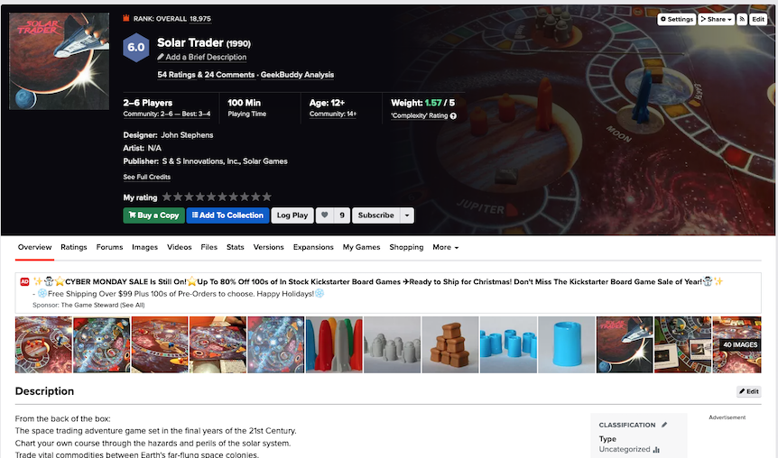
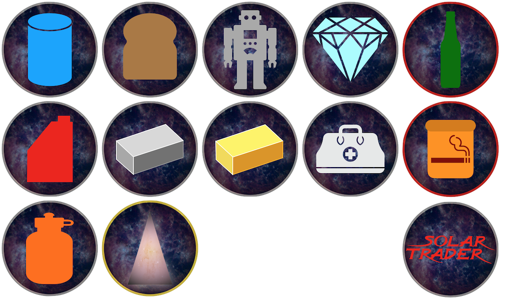
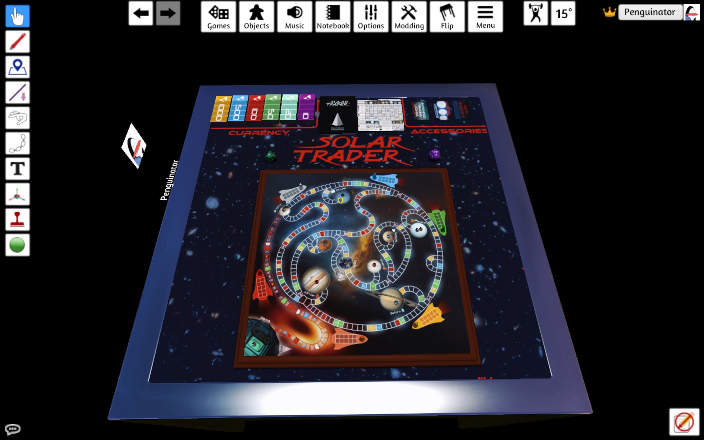
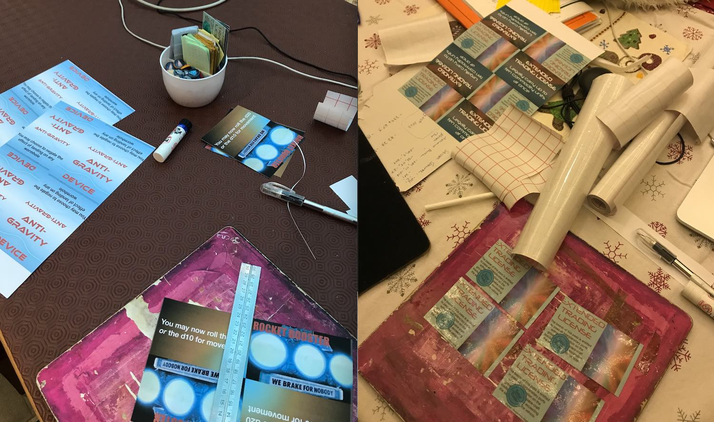
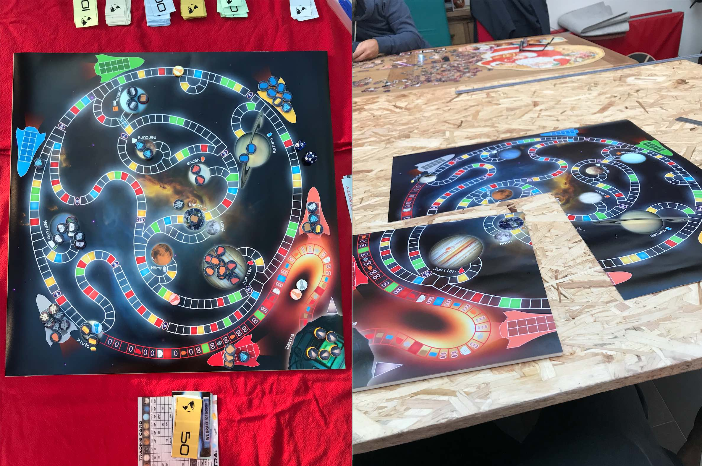
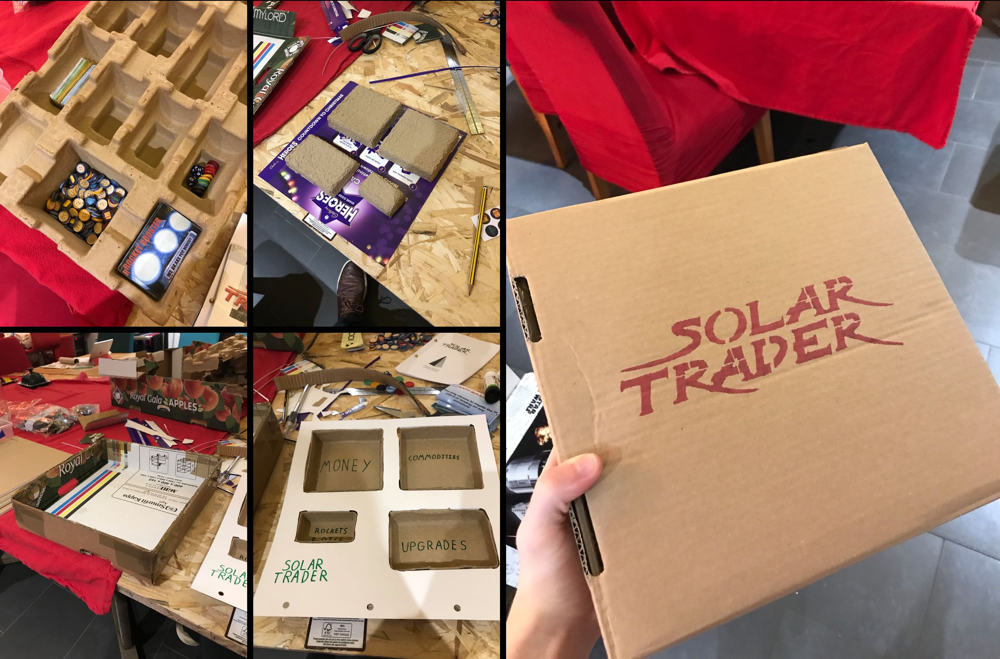

Bootlegging an out-of-print board game from the '90s.
Scroll to the bottom for links if you'd like to have a digital or physical copy yourself.
A friend introduced me to this board game during a get-together, and I rather enjoyed it. I went online to see if I could get a copy, and found nothing of the company and very little of the game, save for some 'sold' eBay listings. With the original copy of the board game soon out of reach with a relative of the friend, I decided to make my own copy... and actually got around to doing it two-ish years later.
I started by designing the art. I managed to find an entry in a board games wiki site for Solar Trader, which happily contained a few pictures of the board and playing pieces, along with a scan of the rules booklet. Major thanks to wiki users Simon Bullman, Thom Denholm, Nick Townsend, Mark O'Reilly, Colin and Fabio Cattaneo for those. Additionally, some expansions have been made by wiki users, which I might have to try out at some point. Anywaaaaaay...
Using the pictures of the original artwork, I set about re-creating the easy stuff (comprising the board, money and upgrade cards). One picture in particular contained pretty much all of these, albeit in low-resolution and at a slight angle. It is a testament to my ability to overcomplicate things that I immediately started trying to correct for the parallax by warping the image badly, instead of looking for other images of the board from directly above, which I found pretty much the instant I gave up on my previous approach.
At time of writing/making, I don't know how to use any real graphics editing programme (Photoshop, GIMP, etc...), and instead use Apple's presentation software, Keynote. As with Microsoft PowerPoint, the multitude of tools that it comes with make it usable for a wider array of graphic design tasks than it was intended for. Add to this the fact that I already have a good knowledge of the software, and learning a new programme for a single, easy-ish project becomes too unappealing to seriously consider.
I started with the board, making heavy use of the freeform tool to trace the outlines of each path a player could take. The intuitive nature of the tool made this fairly quick, although I began to run into a problem here which would persist throughout the project: Keynote is not optimised as a graphic design programme, and thus starts to lag when slides make heavy use of graphical effects. The effect kicks in at a low level when drawing very complex freeform tools, and really makes itself known when lots of high-resolution pictures, transparencies, shadows/glows and shapes are present on screen at once. I'm getting ahead of myself a bit though- at this stage, I was still drawing the basic shapes. Once these were done, I had to draw each individual line separating the paths into squares. I tried the faster option of duplicating and repositioning the previous line, but I found that even when all of the 'snap-to' options were turned off, I still wasn't able to get as precise positioning as when I drew new lines each time. Yet another issue with using presentation software as graphics software.
Once this was done, I drew in the other vector-based bits and pieces, including the wormholes, coloured squares, rocket ships and commodities. The latter were mostly existing shapes from Keynote, with the exception of the Fuel, Ingots and Solar Crystal. The Fuel was drawn quickly with the freeform tool, and the ingots were traced from the Minecraft iron and gold ingots. The Solar Crystal was made from a triangular mask of the Andromeda galaxy with a further coloured transparency on top. All glowing effects are modified shadows; Keynote doesn't have a separate glow effect for objects, but does let you set shadows to be any colour. The pictures of the planets are mostly from NASA, the black hole is the famous image of Messier-87's black hole from a few years ago (although stretched a bunch), Zastra's the prompt 'space technology sphere' entered into Craiyon, and the background's the Hubble Bubble image, which I thought worked well due to it's nice feature in the centre, and natural vignette-type outer edges. Only once I'd printed the board did I realise that the sun is meant to feature in the centre, but it doesn't change how the game plays, so whatever.
As with the board, I had some pretty good pictures of the originals to base my versions off of. The credits were fairly quick, as all I needed was some coloured rectangles, a cartoon picture of the Earth that I reduced down to just the continents, and a sci-fi font (which I already had from a previous design project). I added some flavour on the reverse of the currency, keeping the value and adding in a summation character (∑) as a currency symbol (ie pay the 'sum of' x...), as well as adding in a picture of some alien of appropriate stature; we go from the highest unit of currency having a Xenomorph to the lowest unit, which has to put up with a slugtopus.
While the Trading Card was a straightforward enough (although mis-copying an 1000 into the wrong column on my first go broke the entire economy) copying exercise requiring only a few small changes, the upgrade cards necessitated some re-interpretation, as the originals rely on more artistic talent than I have. The Extended Trading License was fairly easy as it was mostly text-based, with some frames from 2001: A Space Odyssey used to make up the pictoral section of the card. My Rocket Booster picture choice was originally the opening of Star Wars: A New Hope, as it most closely resembles the trading card. I switched to using the Spaceballs shot purely for comic value. The Anti-Gravity card looks super cool in the original game, but I can't draw that well. My solution was to go for a spacetime-bending-in-the-wrong-direction reference that I'm sure will be obvious to everyone who sees it, and not overlooked, ever.
My initial version of the game was meant for TableTop Simulator, so I used digital meeple for the ships, and simple circular tokens for the commodities, to which I added icons for each commodity. As mentioned in the above section on the board, many of these symbols were built into Keynote, with the exception of fuel, gold, silver, tobacco and solar energy crystals. To these I added a background of some nebula (I can't remember which now), and border colours based on the different commodity types.
Getting the designed assets out of Keynote and into TableTop Simulator could be as easy as taking screenshots and using them as textures. However, this is extremely lossy and felt a bit wrong to boot; I wasn't quite willing to throw away any details after spending so long labouring over them! The janky solution I found was via a slightly unhinged forum post which I sadly haven't been able to find again, which suggested exporting the Keynote file as a PDF, which can then be converted into a series of TIFF images at extremely high resolution, and then downsized to workable resolutions and filesizes. This does the job perfectly, and after some tutorial following and elbow grease, I had a playable version of Solar Trader in TableTop Simulator:
In addition to the assets I designed earlier, I also created some table art, and a pano picture for the room featuring the M-87 black hole. I haven't finished this version of the bootleg, but I plan to add some space-themed ambience and maybe music, and then release it on the Steam Workshop. I'll pop a link here if I ever do that. I conducted some play-testing of this version with friends, and while it was fun and the graphics I'd made were judged to be decent, the limitations of playing a tactile board game via computers slowed down the game and took the energy out. This is a death knell for a playing session, especially when the game is unfamiliar to some of the players. The solution, of course, was to make a physical version.
To play this game properly, I needed to print out a board, a bunch of Monopoly-style money, and the upgrade and trading cards. I wasn't yet sure what to do about the commodities and rockets. I figured that I'd try and get the board printed properly somewhere and, failing that, I'd print out a negative version (to avoid using up a tonne of black ink) at home in sections. I had some leftover card from some experiments in making album sleeves for some CDs I'd burned of my music, and sticky back plastic left over from my school days, which I intended to use to laminate the various cards and board to protect them from damage. For the additional supplies, I headed to Hobbycraft. I picked up coloured paper to print money onto, a sort of foam/card board to mount the printed board design to, and two options for the commodities: clay and buttons. Clay was for modelling each commodity unit and rocket after the injection-molded originals, and buttons were TableTop Simulator token analogues in case that didn't work out.
The art was modified a bit to work better in real life. The entirety of the Trading Card's actual info was moved onto the front because the 'turn over to trade on Zastra' thing felt awkward to me. This freed up the back of the card for some nice logo design, which in this case contained the game's logo (as taken directly from a picture of the box which I then twiddled with a bunch) and a deconstructed Solar Energy Crystal, showing the Andromeda picture and the transparency (another transparency was added on the other side to balance the image, even though it's not part of the actual Solar Energy Crystal design at all). Some cards had black ink elements reduced a bit to save money on ink (notably the anti-grav), and I also made sure to include info on each upgrade card stating what the upgrade did, aiming to decrease the amount of time spent looking stuff up in the rulebook. The cash design was converted to monochrome and then negatived so it could be printed onto colour paper in black and white for that Monopoly money look, which I think worked pretty well. The back design was modified so I didn't have to worry about aligning the printing on both sides of the paper, instead opting for a small repeating version of the original back designs, which gave the impression of currency watermarking and kept the extra alien details still intact.
I started with the tokens and money, yoyoing back and forth between the two tasks over an afternoon. After doing some maths, I'd worked out that in order to make the tokens small enough to fit on the board, I'd have to go away and learn how to work clay with some degree of proficiency. Even then I believe it would have been a challenge to make each piece consistent with the others. In the interest of speed and decreased jankiness, I went with the buttons option.
The first step was to colour the outside of the buttons to match the borders of the token artwork I'd made earlier for the TableTop Simulator version, which was done simply with some Sharpies. This took a while, so I began printing out the currency sheets concurrently. After a bunch of cutting and drawing, I was left with finished currency, and a bunch of half-done tokens.
After this, I printed out a sheet of commodity art, which I scaled down to button size and filled a sheet of A4 with. I made sure to make more tokens than necessary so that I don't have to start the making process all over again as soon as a piece or two are lost. Once the art was printed out onto some A4 card, I laminated it with sticky back plastic (harder than I remembered it being), and began cutting them out and applying them to the buttons with the help of a rather old Pritt stick. This took some time, but yielded some nice-looking results. The only problem with these tokens, functionally, is that they are still bigger than will fit nicely on the board (specifically in spaceship holds), but this shouldn't be too big an issue because they stack quite well. The finished tokens were left to dry overnight, and in the morning were pretty solid. It's still relatively early doors as I write this, but not a single token has yet suffered from peeling of the card from the button, or sticky back plastic from the card, even through a minor spillage onto a few pieces. Not bad for school supplies.
Additionally, I ended up making the rockets into button-style tokens too. They work for now, but I might try and see about getting some better ones 3D-printed, laser cut, or squidged out of clay- depending on available time and resources.
These were all made in a relatively similar way to one another. To avoid the many annoyances that come with aligning double-sided printing, and to add extra thickness to the cards, I printed both sides of the designs onto the same side of A4 card so that I could cut them out, laminate them, fold them over and glue them and then have finished cards. This was fairly easy to do, apart from applying the sticky back plastic, which ruined a set of printouts due to bubbles and damage to the card after minor repositioning. Once folded and glued, they were left to dry under a heavy book for some hours, which helped keep them flat. In this time I also printed out the rulebook, which was pretty easy overall but did have me scratching my head for a few minutes while getting all the pages in the right order for printing, compared to reading in the PDF.
I exported this at a ludicrous resolution, and took it to be printed at 58x58cm, giving me a few centimetres of leeway on the backing board that I planned to mount the printout to. The printing place got it done on the same day, and so I brought it home and promptly got too nervous to do any further work on it for the rest of the day. The print looked perfect, I cut the backing board to exactly the right size, and any mistake now would likely mean buying a new printout, or a new backing board- neither were the cheapest things in the world. Also, I had a problem in that the board needed to fold or otherwise come apart, or it'd be really difficult to store. I decided against folding it after realising that the photo paper would become the hinges, and I highly doubted that it would hold up nicely for any length of time. After some umming and ahhing, I cut the backing board into equal quadrants, and used those to cut the printout to the exact size. This was rather nervewracking, but came out pretty nicely, with only some slight problem edges which could more or less be ignored. The printout quadrants were mounted onto their respective backing board quadrants with quite a lot of Pritt stick glue, and after drying, looked and felt great. At some point I should probably put sticky back plastic or something similar over the photo paper to protect it from scratches, but that's going to have to wait, as I feel sticky back plastic could be too shiny, and make the board less ledgible (see the problems I had with the front panel of the JD-Xi synth, which I'll write a page about at some point). Is there such a thing as matte sticky back plastic?
Once this was all done, and with the addition of a space-themed d10 and d20, I had a fully playable, physical set of Solar Trader. It stood up very nicely to some playtesting, and was enjoyed by my whole family over the course of two evenings (I think we could have played through in one, but it was Christmas at the time and life was busy). The only problem was that there was nowhere to store the game.
After finding that most existing boxes were too small by a few centimetres, I set about making my own out of some cardboard packaging left over from Christmas. The box itself was pretty easy; size-match to the largest components (the board quadrants), give a little leeway, and make a net. The harder part was where to put the money, cards, tokens, etc. I wanted to make something like you get in normal board games, with a vacuum-formed insert containing little trays for everything to sit neatly inside. Having no access to vacuum forming technology, I had to get creative. I was planning on making smaller card trays from cereal boxes or something, but fortune smiled on me in the form of an empty beer advent calendar (don't ask), which had cardboard packaging inserts to hold the cans in place. Removed from the rest of the calendar, these worked perfectly; I put the different bits and bobs from the game wherever they'd fit, and then cut that section out. After that, I just had to create a 'surface' from another bit of leftover advent calender, and I had a fully functional insert to neatly store everything in. After a lot of packaging tape to keep everything secure and protected from a little wear, and a stenciled logo, the box looked pretty good. Not quite as swish as the original packaging, but it certainly looks like a package that a Solar Trader might have stashed in the hold of their craft.
Done!
The TableTop Simulator version can be accessed on the Steam Workshop here, and the print-ready files if you want to make a physical copy are here. I had some doubts about the ethics of putting this here until I realised that with the original company long gone and the game out of print, there's not only no-one losing money on this currently, but also so little demand for the game that it's kind of a moot point.